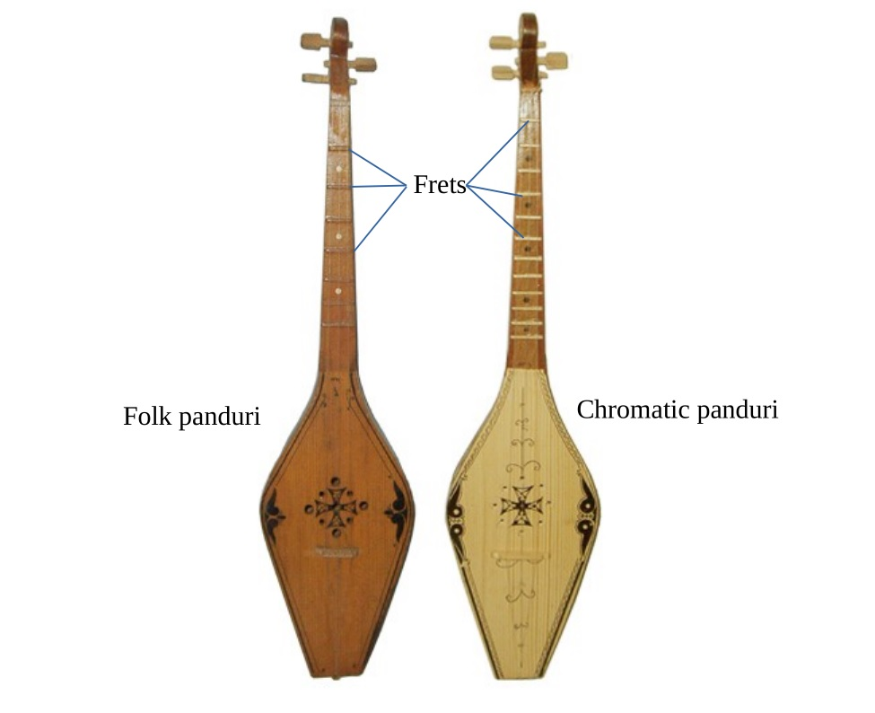

Which panduri
There are two main variants of the panduri that exist today, as far as I know: the traditional folk panduri (ხალხური) and the chromatic or classical panduri (ქრომატიული). As the names imply, the folk panduri is older and more traditional, while the chromatic panduri is a modified version, possibly created to fit the harmonies of western music theory.

The two panduris are basically identical in shape and number of strings. The differences lie in the tuning and in the frets: the folk panduri usually has 6 frets, sometimes 7, while the chromatic panduri has 12.
The panduri you should choose depends on what kind of music you want to play. The folk panduri is better for playing old traditional Georgian folk songs, as you will get harmonies and fingerings that you can't get on the chromatic panduri. However, with the chromatic panduri, you get all the tones on the western musical scale, which means you will be able to play all kinds of non-Georgian songs too.
This guide is for the chromatic panduri, but much of the information will apply to both. The chord chart at the end will only be for the chromatic panduri.